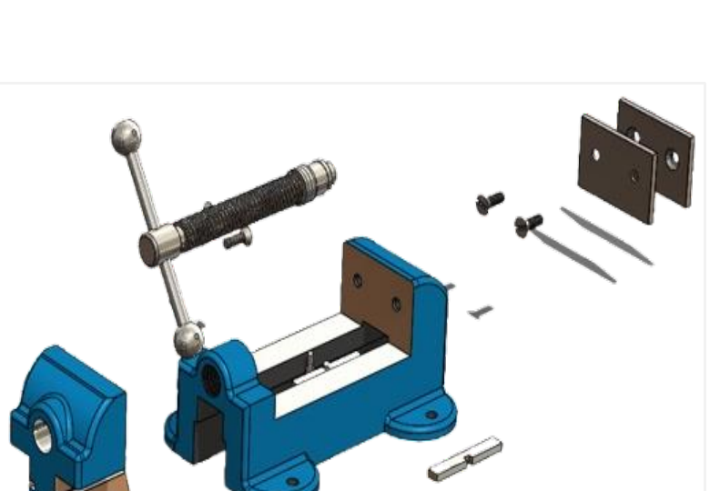

Bench Vice Assembly
A fully functional bench vice with accurate mating constraints, engineered for load-bearing accuracy and manufacturability of every component.

Isometric Render — Bench Vice Assembly
Requirement
Model a fully functional bench vice assembly with accurate mating constraints, focused on load-bearing accuracy and the manufacturability of every component.
Design Approach
The sliding jaw and spindle were modeled around a trapezoidal thread for smooth, self-locking clamping action, with a guide-bar fit toleranced to prevent jaw rotation under load.
Key Design Features
- ISO metric trapezoidal spindle thread for smooth clamping motion
- Toleranced sliding-guide fit to resist jaw rotation under load
- Machined and hardened jaw faces for wear resistance
Manufacturing Considerations
- Cast-iron body, sand-cast, with jaw faces machined and hardened afterward
- Spindle and handle assembled from EN8 steel for strength under repeated clamping
- Guide-bar fit toleranced for smooth sliding without excessive play
Assembly Considerations
Assembly mates were used to capture the full range of jaw travel and confirm the spindle, handle and jaw move correctly together before the drawing was released.
Material
Cast iron body (sand cast); EN8 steel spindle and handle assembly.

Bill of Materials
- Base — Qty 1 — Cast Iron (Sand Cast)
- Sliding Jaw — Qty 1 — Cast Iron (Sand Cast)
- Spindle & Handle Assembly — Qty 1 — EN8 Steel
- Fixed Jaw Plate — Qty 1 — Cast Iron (Sand Cast)
A working assembly that demonstrates mechanical clamping mechanisms, load paths through the jaw and spindle, and manufacturable mating tolerances end to end.